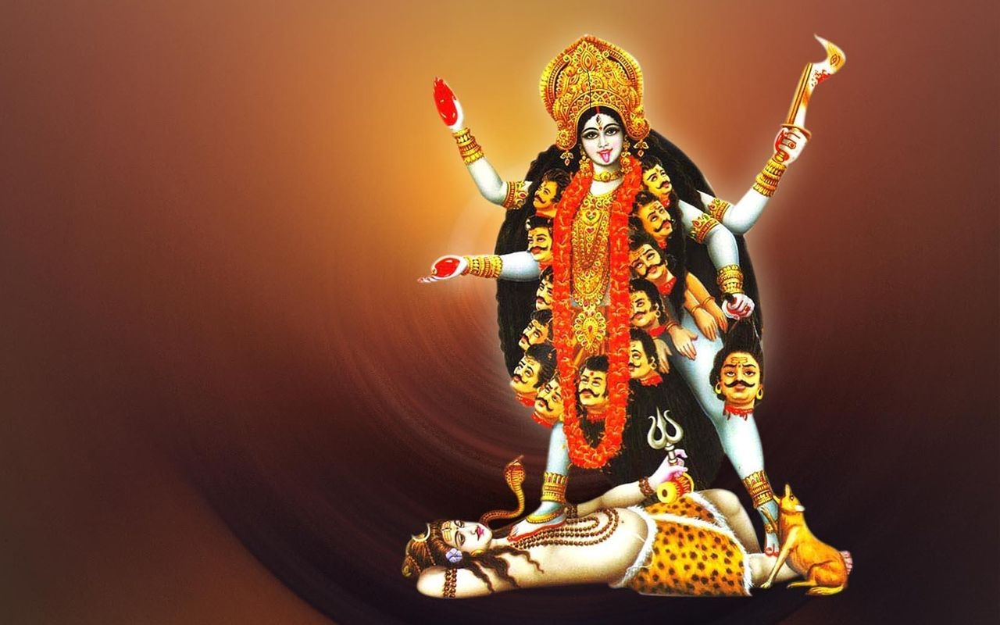

Kali est, dans l'hindouisme, la déesse de la préservation, de la transformation et de la destruction. C'est une forme terrifiante de Pārvatī représentant le pouvoir destructeur du temps. Son nom dérive du mot kālá, le temps en sanskrit, celui qui détruit toute chose. Celui qui la vénère est libéré de la peur de la destruction. Elle détruit le mal sous toutes ses formes et notamment les branches de l'ignorance, comme la jalousie.
Kali est considérée comme la force qui détruit les esprits mauvais et qui protège les dévots.
